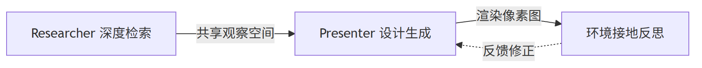

PPTv2agent 参考：DeepPresenter 双 Agent 架构与 Content Style

DeepPresenter ACL2026 SOTA（均分 4.44 超 Gamma 4.36）
双 Agent 共享观察空间 + 环境接地反思
信息加工成半成品而非原材料
每页围绕一个核心洞察，金字塔原则
图片承载信息而非填空，优先可信来源
学术参考方法论，PPT-Agentskill 是工程落地